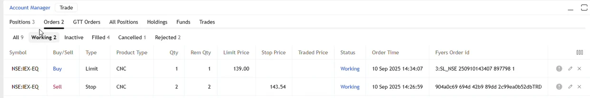
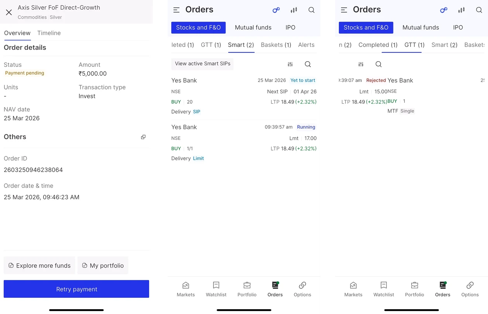
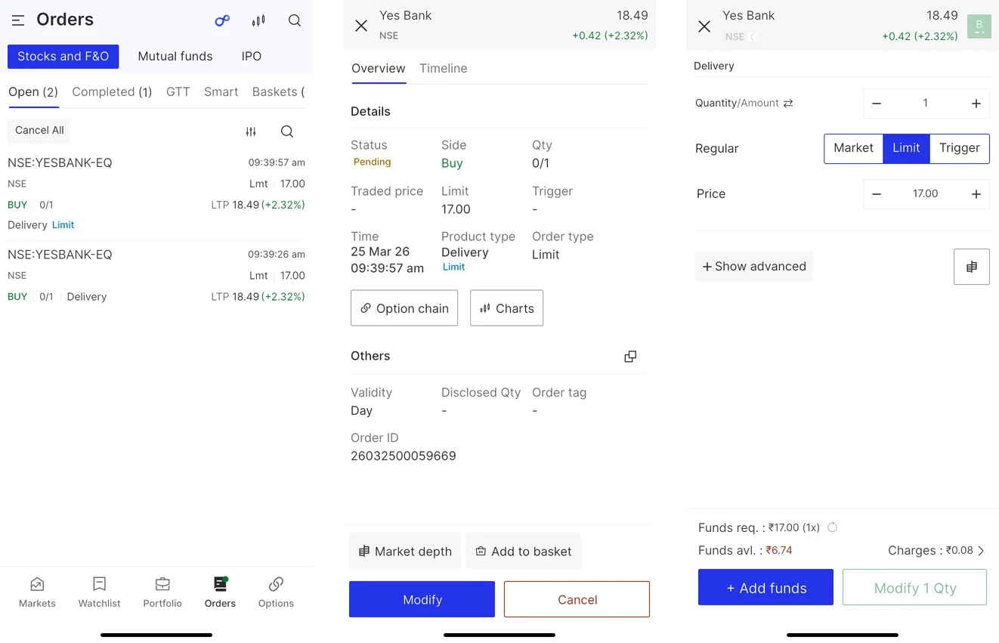
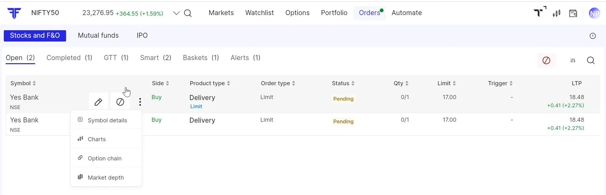

FYERS · Trading · 2024–25Hands-on3 min read
Orders: one home for every order
Orders used to be one tab inside the Account Manager. I designed FYERS’s first unified Orders section, every screen on web and app myself, so every kind of order a trader places can be found, tracked and acted on in one place.
- The problem
- Orders had no home of their own. They sat in one tab of the Account Manager, while each order type, from GTT to smart orders to mutual funds, had its own states and rules.
- My role
- Design manager, and the designer on it: every Orders screen on web and app, with the product manager and the developers.
- The call
- One Orders section for every order type, the same structure on web and app, and each order’s status deciding what you can do with it.
- The result
- Shipped on web and app in January 2025. FYERS’s help centre documents it today as one unified section, with the same rules on both.
The situation
After placing a trade, the next thing a trader wants to know is what happened to it. Is it still pending? Did it fill? Was it rejected? Can I still change it?
Yet orders had no home of their own. They lived as one tab inside the Account Manager, alongside positions, holdings and funds. And “an order” no longer meant one thing: limit and market orders, after-market orders, GTT, smart orders such as trail, step and SIP, mutual fund purchases and IPO applications each have their own states, and their own rules for what can still be done.

My role
As a design manager, I took Orders on as the designer myself: every screen, on web and in the app. I worked directly with the product manager and the developers, from the first structure to the release in January 2025.
After placing a trade, the next thing a trader wants to know is what happened to it.
The decisions
There was a PRD, but it covered only the basics. I started with the information architecture, took it to the product manager for approval, and the decisions below came out of it.


Making change cheap
Orders spans many screens built from the same few patterns: an order row, a status, a details view, an action bar. Even on a shared design system, the usual workflow of wireframes, review, high-fidelity UI and more review made every piece of feedback expensive: find every affected screen, update each one, review the lot.
So I went straight to a high-fidelity working model, assembled from reusable components inside the project. A change to a shared pattern became one edit instead of a sweep across screens, and stakeholders reviewed something close to the real product, so their feedback was about the real thing.
- Faster iteration, with less repetitive screen-level work
- Stronger consistency across web and app
- Feedback that landed on patterns, so it was easier to absorb
Outcome
Orders shipped on web and app in January 2025, the first time FYERS had one section for every order a trader places. It is still the structure FYERS documents in its help centre: one place to view, track and manage stocks and F&O, GTT, smart orders, mutual funds and IPO, where the web and the app follow the same rules.

What I learned
- Fidelity is an operational decision, not only a conversational one. I had treated it as a way to control how much detail a conversation carried. For a connected experience with repeated patterns, a well-structured high-fidelity model can be the cheaper place to iterate.
- It is not a rule for everything. The right fidelity depends on the problem, the maturity of the system underneath, how much the UI repeats, and whether stakeholders need to see the final experience to give useful feedback.
- Managing and making are not in tension. Designing a core product myself showed me what the systems and processes we were building actually cost the people using them every day.